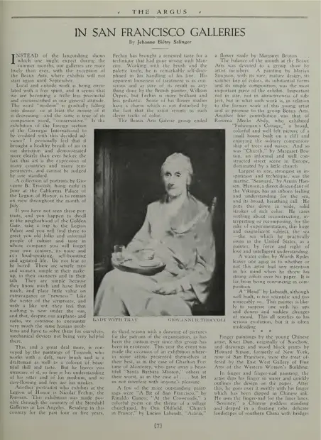

San Francisco art review — East West Gallery
访问原网页 ↗Visit original website ↗

S064 · The Argus · 1928年7–8月
评论连载两页，提到指甲用线、Serenity、桥、水田和鸟的题材。与 Howard Simon 的版画分开著录。A two-page review describes fingernail linework, a figure titled Serenity, landscapes and birds. Howard Simon’s woodcuts belong to the other artist in the show.
馆藏图像与原文Archived images and documents
- The Argus 剪页 1928年7–8月The Argus — exhibition clipping I056
- The Argus 剪页 1928年7–8月（续页）The Argus — exhibition clipping (continuation) I057


原始网址Original URL
https://blogger.googleusercontent.com/img/b/R29vZ2xl/AVvXsEj47PvNPfT1iS1R-6sVPlqDvjLzDMwOjZBKzP1fwMoRe-8k0cw_1Dp4GGZWnade2G2wC_SgFSEBQwGvwYOyT108Ue9JYF8QwrpSbwQczSJ6bNIQrRkeE0txXAE9QB7cL2uX_pEm0PFRq9xj/s1600/1928_07:08+Kwei+Dun+The+Argus+01.jpg